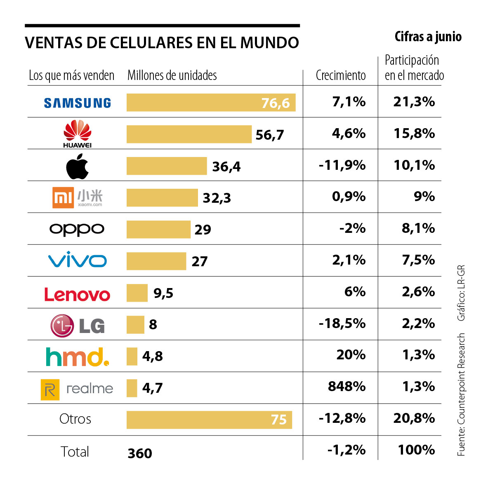
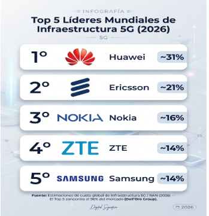

Huawei y origen del caso
El crecimiento que empezó a preocupar a los competidores
Entre 2018 y 2019, Huawei tuvo un crecimiento impresionante.
En el segundo trimestre de 2019 llegó a superar a Apple en ventas mundiales de celulares y se convirtió en el segundo fabricante más grande del mundo, detrás de Samsung.
Su objetivo era convertirse en el número uno.

Huawei ya no era solamente una empresa china que competía en su mercado local, estaba disputando el liderazgo mundial de una industria dominada históricamente por compañías estadounidenses, surcoreanas y japonesas.
Y no solamente estaba creciendo en celulares, también estaba desarrollando una posición muy fuerte en la tecnología 5G.
El conflicto entre Estados Unidos y Huawei
El temor estadounidense era que el Gobierno chino pudiera aprovechar la tecnología de Huawei para acceder a información sensible. Estados Unidos sostenía que Huawei podría representar un riesgo de espionaje debido a su relación con China y las leyes chinas
Palabras del presidente de Estados Unidos Donald Trump sobre Huawei
China tiene una Ley de Inteligencia Nacional de 2017, donde establece que organizaciones y ciudadanos deben apoyar, asistir y cooperar con el trabajo de inteligencia del Estado conforme a la ley.
Estados Unidos presentó acusaciones de seguridad nacional, pero no hizo pública una demostración concluyente de que Huawei hubiera utilizado sus equipos para realizar una operación global de espionaje.
La preocupación era que Huawei pudiera verse obligada a colaborar con el Gobierno chino sin que los usuarios extranjeros lo supieran.
Pero sin embargo, que una ley establezca obligaciones de cooperación no demuestra que Huawei haya recibido órdenes de espiar a sus clientes ni que efectivamente lo haya hecho, donde Huawei negó reiteradamente trabajar como instrumento de espionaje del Gobierno chino.
El verdadero posible temor de Estados Unidos hacia Huawei
Estados Unidos no solamente estaba preocupado por la seguridad. También estaba viendo cómo una empresa china comenzaba a desafiar su posición en una industria estratégica.

Estados Unidos no tenía una empresa propia que dominara el mercado mundial de infraestructura 5G de la misma manera que Huawei.
Huawei estaba superando a ciertas empresas estadounidenses y estaba logrando lo que Estados Unidos no podía:
- Estaba entre los líderes mundiales de infraestructura 5G.
- China estaba invirtiendo mucho dinero en tecnología.
- Huawei estaba creciendo en el mercado internacional de celulares.
Donde los principales competidores de Huawei en infraestructura eran empresas europeas como Ericsson y Nokia, no solamente empresas estadounidenses.
Entonces, Estados Unidos veía que China podía conseguir algo muy importante, tener influencia sobre las redes de comunicación que utilizaría el mundo durante las próximas décadas. Y eso significaba poder económico, tecnológico y geopolítico.
Donde se deduce que Estados Unidos utilizó una combinación de preocupaciones de seguridad reales y objetivos estratégicos para justificar una política de contención tecnológica contra China.
Dejando un misterio entre medio donde no se puede afirmar con exactitud que el espionaje fuera una mentira inventada desde cero, tampoco se puede tomar todas las acusaciones estadounidenses como hechos demostrados.